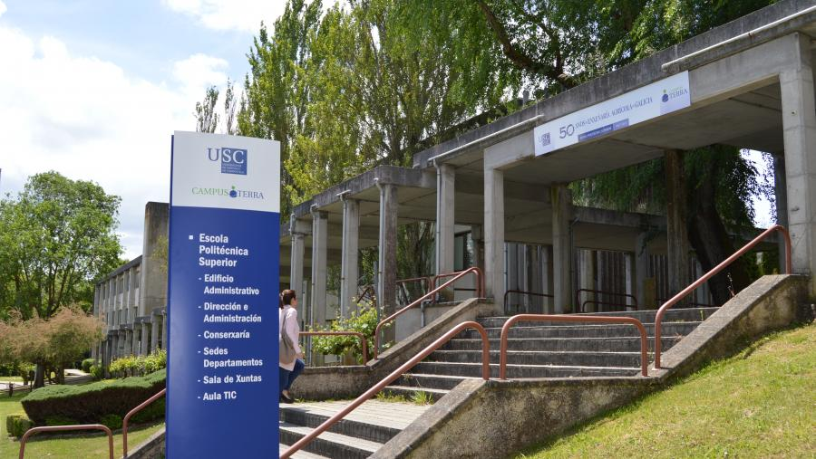

Local
Lugo, cidade Património da Humanidade
Lugo é uma cidade única na Europa por conservar integralmente a sua muralha romana, reconhecida como Património Mundial. O centro histórico e a identidade cultural tornam a estadia num complemento ideal para o encontro ibérico.
Local académico
O Colóquio terá lugar no Campus de Lugo (USC), na Facultade de Humanidades e na Escola Politécnica Superior de Enxeñaría. Localizado a sul da cidade, o campus dispõe de ligação ao centro por autocarro urbano.
Como chegar
De comboio
Lugo tem estação ferroviária e ligações a A Coruña e Ourense, permitindo ligação à alta velocidade. Da estação pode chegar-se a pé (preferencialmente) e também por autocarro urbano e táxi.
De autocarro
A estação de autocarros liga Lugo às principais cidades galegas e a rotas de média distância. O acesso ao centro pode fazer-se a pé (preferencialmente) e também por autocarro urbano e táxi.
De carro
Acessos principais pela A-6 (Madrid–A Coruña), A-8 (Cantábrico) e A-54 (Santiago–Lugo). A cidade dispõe de parques de estacionamento públicos e zonas de estacionamento.
De avião
Os aeroportos mais recomendáveis para chegar a Lugo são A Coruña (Alvedro) e Santiago de Compostela (Rosalía de Castro). De ambos é possível continuar de carro ou autocarro até Lugo.
Alojamento e turismo
A oferta de alojamento em Lugo é ampla intra-muros e também fora da muralha. Existem ainda opções económicas na rede de albergues. Pode ampliar esta informação em Turismo de Lugo .

